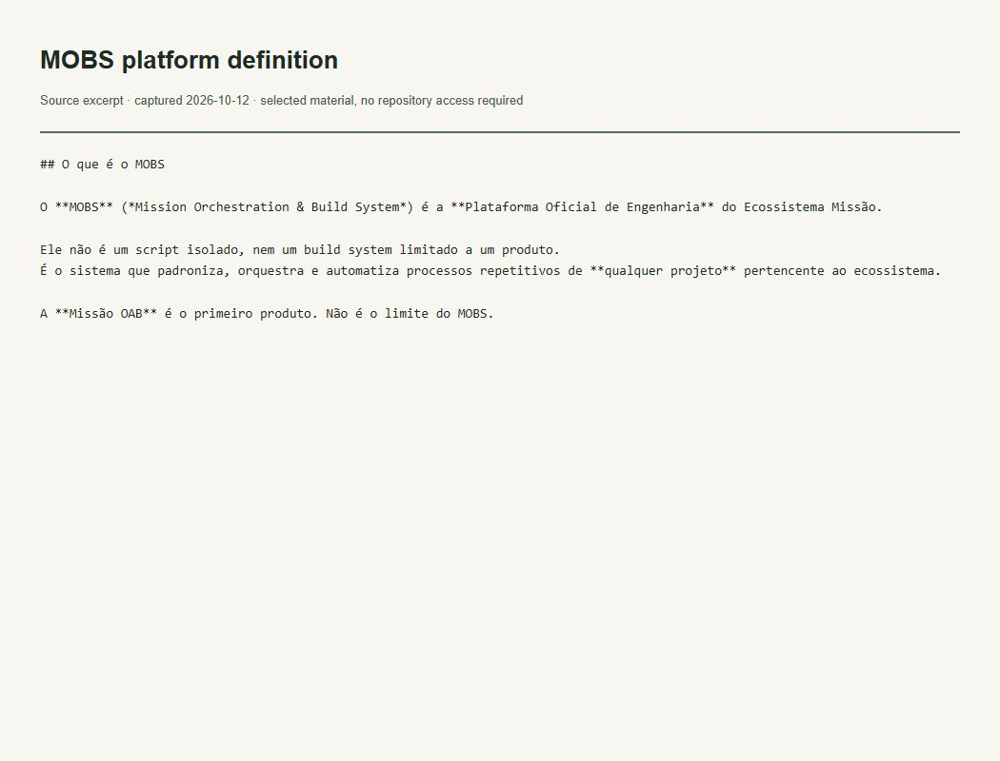

Evidências do trabalho
Arquitetura institucional
O que esta evidência demonstra
Define a plataforma de engenharia e seu significado oficial atual.

Ler transcrição literal acessível
## O que é o MOBS O **MOBS** (*Mission Orchestration & Build System*) é a **Plataforma Oficial de Engenharia** do Ecossistema Missão. Ele não é um script isolado, nem um build system limitado a um produto. É o sistema que padroniza, orquestra e automatiza processos repetitivos de **qualquer projeto** pertencente ao ecossistema. A **Missão OAB** é o primeiro produto. Não é o limite do MOBS.
Contexto e limites
Evidência da definição institucional, não medição de adoção ou resultados comerciais.
A imagem é uma captura local de um recorte literal do arquivo verificado. Não é captura da interface do GitHub nem da aplicação em execução. O trecho permanece no idioma original.